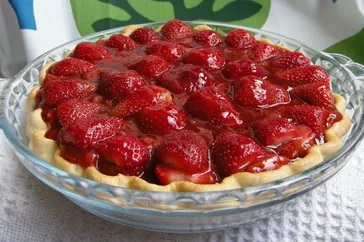

Strawberry Pie

Description
This strawberry pie is my favorite pie, and it's very easy to make. I got the recipe many years ago in North Jersey from the Sussex County Strawberry Farm.
Ingredients
- 1 quart fresh strawberries, hulled
- 1 (9 inch) pie crust, baked
- 1 cup white sugar
- 3 tablespoons cornstarch
- ¾ cup water
- ½ cup heavy whipping cream
How to make it?
-
Gather all ingredients.
- Arrange 1/2 of strawberries in baked pastry shell. Place remaining strawberries in a medium saucepan.
- Add sugar to the strawberries in the saucepan; place over medium heat and bring to a boil, stirring frequently.
- Whisk cornstarch and water together in a small bowl. Gradually stir cornstarch mixture into boiling strawberry mixture. Reduce heat and simmer mixture until thickened, about 10 minutes, stirring constantly.
- Pour cooked strawberry mixture over berries in pastry shell. Refrigerate until chilled and set, at least 3 hours.
- Before serving, whip cream in a medium bowl until soft peaks form.
- Serve each slice of pie with a dollop of whipped cream. Enjoy!